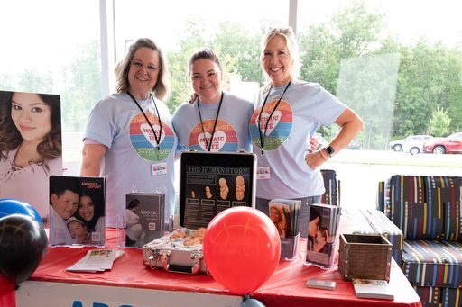
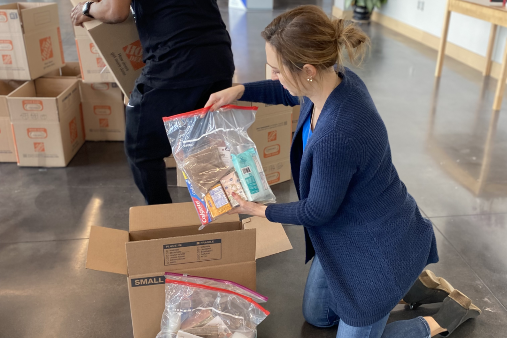

Grief Share is a support group that helps those dealing with the loss of loved ones. Discover a special place where you can find help as you grieve the loss of a family member or friend. You don’t have to be alone as you make the journey through grief.
Learn More
Our church supports MOSAIC, a non-profit medical organization serving women facing unplanned pregnancies. All services are offered at no cost. Client information is private and confidential.
Learn More
At Christian Fellowship Church we value each and every person and understand that life’s trials are difficult and that sometimes unusual circumstances require us to reach out for assistance.
Learn More"When someone becomes a Christian, they become a brand-new person inside. The old life has passed away and a new life has begun!" 2 Corinthians 5:17.
The word "baptize" comes from the Greek word "baptizo" which means "to dip or immerse" under water. When a person is baptized, it represents his or her identification with the death, burial and resurrection of Christ. It is an outward symbol of a person's inner faith and decision to be a committed Christ-follower. The choice to be baptized is made by a "believer," and is a public profession of his or her faith in Christ.
Baptisms are conducted in both morning worship services. A one-time class is required for baptism. This class will cover:
Communion at Christian Fellowship Church is open to all who have a personal relationship with our Lord and Savior Jesus Christ. You do not have to be a member of our church to participate in this important meal. It is important that each of us understand what communion means and how special it is to us as Christians.
Jesus never asked His disciples to remember His birth. But He did instruct us to remember His death and resurrection. The Lord's Supper is an object lesson that represents a great spiritual truth for us as believers. Jesus instituted this on the night he was betrayed and told us that He would not partake of it again until we have all been gathered together with him in Heaven. This meal is available to us at each of our Sunday gatherings.
For I received from the Lord what I also passed on to you: The Lord Jesus, on the night he was betrayed, took bread, and when he had given thanks, he broke it and said, "This is my body, which is for you; do this in remembrance of me." In the same way, after supper he took the cup, saying, "This cup is the new covenant in my blood; do this, whenever you drink it, in remembrance of me. For whenever you eat this bread and drink this cup, you proclaim the Lord's death until he comes.
1 Corinthians 11:23-26 NIV